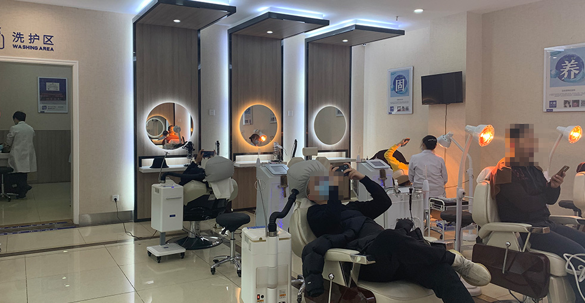

Many overseas patients assume that a lower price tag automatically means subpar quality. The reality is quite different — China's favourable pricing is driven by leaner operating costs, not by cutting corners.
Everything from labour and real estate to administrative overhead is considerably cheaper than in Western economies. This enables centres like Barley Hospital to offer premium-grade procedures at a fraction of what Western patients are accustomed to paying, all while using the very same advanced technology, precision tools, and clinical standards you'd find at top clinics in London, New York, or Sydney.
Figures based on a standard 2,000–2,500 graft FUE session
| Country | Average Cost (2,500 grafts) | Per-Graft Price | Savings vs UK |
|---|---|---|---|
| 🇬🇧 United Kingdom | £8,000 – £15,000 | £3.20 – £6.00 | — |
| 🇺🇸 United States | $10,000 – $20,000 | $4.00 – $8.00 | Costs more |
| 🇦🇺 Australia | £6,000 – £12,000 | £2.40 – £4.80 | 20–40% higher |
| 🇹🇷 Turkey | £2,000 – £4,000 | £0.80 – £1.60 | Comparable |
| 🇨🇳 China (Barley) | £2,500 – £6,000 | £1.00 – £2.50 | 50–70% savings |
Complete graft harvesting, recipient site creation, and meticulous implantation carried out by our highly experienced surgical crew. This covers all technical staff, specialist equipment, and consumables for the duration of your session.
All post-surgical prescriptions, medicated shampoos, saline rinses, and wound-care materials. Every item you need during the critical early recovery window is already baked into your total price.
Your dedicated surgeon bringing 10+ years of hands-on experience, a proficient technical crew managing graft sorting and preparation, and attentive nursing personnel supporting you from start to finish through procedure and recovery.
Rough total expenditure for international visitors (based on 2,500 grafts)
| Expense Category | Estimated Cost |
|---|---|
| Hair Restoration Procedure | £3,000 - £4,500 |
| Return Airfare | £400 - £900 |
| Accommodation (5 nights) | £250 - £500 |
| Food & Local Travel | £150 - £300 |
| Tourism (optional) | £100 - £300 |
| GRAND TOTAL | £3,900 - £6,500 |
Keep in mind that this identical procedure in the UK alone would run you £8,000–£15,000. Even once you add every travel expense, you'll still pocket thousands in savings while receiving care from one of the most seasoned hair restoration teams in Asia.
Reduced costs do not mean reduced quality — it simply boils down to basic economics. Advantageous exchange rates, leaner overhead structures, and robust government support for medical tourism enable Chinese clinics to perform world-class procedures at prices that are genuinely accessible. Barley Hospital invests heavily in state-of-the-art equipment, continuous surgeon training, and modern clinical spaces — the very same investments that drive up prices at Western facilities.
On top of that, our surgeons perform hundreds of operations annually, accumulating a breadth of hands-on expertise that rivals the best practitioners anywhere on the planet. Higher case volumes translate into better outcomes at lower costs — benefits we pass straight through to our patients.
Honest rates, remarkable results — no concealed charges, no unexpected bills

Barley Hospital is dedicated to making premium hair restoration available to a wider audience. Our open-book pricing model means you see every cost before you commit — no buried fees, no day-of surprises. Just straightforward, competitive pricing for truly outstanding outcomes.
Typical rates for the most popular procedures at Barley
A streamlined process to pinpoint your exact treatment investment
Upload sharp images of your hairline, crown, back, and sides
Our surgeon analyses your case and responds within one business day
Receive a thorough estimate including graft count and complete pricing details
Reach out to our patient coordinators whenever you like — we're always available
Zero pressure, zero obligations — decide when you're ready
Pick a convenient date and organise your journey to China
Proven track record, remarkable patient outcomes
Leading the way in microneedle hair transplant innovation since 2006
Strategically located in major metropolitan areas, each maintaining the same high standards
Advanced microneedle and implant pen systems designed for superior outcomes
Patients from every corner of the globe count on us for natural, enduring results
Comprehensive English-speaking assistance for international patients from start to finish
Modern facilities equipped with rigorous safety protocols for total peace of mind
Take a look at the remarkable transformations our patients have achieved


Unforgettable moments alongside patients who placed their trust in Barley

A beaming patient displaying their gorgeous, natural-looking new hair

This individual celebrates a fresh new appearance and a surge of self-assurance

Radiating confidence following a flawless hairline reconstruction

Displaying a stunning before-and-after surgical transformation

An international visitor thoroughly pleased with the entire journey

Smiling with renewed confidence after attaining a completely authentic appearance

A contented patient alongside our compassionate clinical staff

Proudly presenting a successful, natural-looking hair restoration
Genuine accounts from patients who journeyed to us from around the world
"I got quotes from three different clinics in New York and they all wanted over $15,000 for my procedure. When I found Barley's pricing breakdown, I couldn't believe the difference — even with flights and hotel, I saved nearly $8,000. What really impressed me was that the quote they gave me online matched the final bill exactly. No hidden fees, no surprises."
"As someone who budgets carefully, I needed to understand exactly where my money was going. Barley provided a detailed breakdown showing the per-graft cost, surgeon fees, medications, and follow-up care — all itemised clearly. In London, I was given a single lump sum with no explanation. Here I could see the value at every step. The total came to less than half what I'd been quoted in the UK."
"I was hesitant about travelling overseas for surgery, but the cost savings were too significant to ignore. My 2,500-graft procedure cost AUD $6,500 all up, including flights and accommodation. Back in Sydney, the same surgery would have been over AUD $18,000. The quality was identical — modern facility, experienced surgeon, excellent results. I actually had money left over for a holiday."
"Die Transparenz der Preisgestaltung hat mich überzeugt. In Deutschland zahlt man für eine Haartransplantation schnell 8.000 bis 12.000 Euro. Bei Barley bekam ich ein detailliertes Angebot für 3.200 Euro — inklusive aller Medikamente und Nachsorgetermine. Die Qualität war erstklassig, und ich habe über 5.000 Euro gespart. Die Kommunikation war von Anfang an klar und ehrlich."
"I compared prices across Turkey, India, and China before choosing Barley. Turkey was slightly cheaper, but Barley's track record — 18 years, over 100,000 procedures, 30+ clinics — gave me confidence that I wasn't sacrificing quality. The per-graft cost was £1.80, which is incredibly competitive. The package included everything: surgery, medications, follow-ups. No upselling, no pressure."
"The payment flexibility made a huge difference for me. I could pay a deposit to secure my date, then settle the balance later. The total cost was £3,800 for 2,800 grafts — about one-third of what I was quoted in Mumbai. Even after adding travel expenses, I saved over £4,000. The coordinator helped me find affordable accommodation nearby, which kept costs down further."
Take a virtual tour of our contemporary, welcoming clinic environment

Our cutting-edge medical centre

Unwind in our stylish lounge space

Fully sterilised environment outfitted with the newest operative technology

A private, professional setting for your personal evaluation

A tranquil space purpose-built for your comfort following surgery

A warm, inviting entrance designed to put you at ease immediately
All the essential information about our fees and overall costs
Get in touch to arrange your no-obligation consultation
15810155700
+86 13730143529
hairtransplant@qq.com